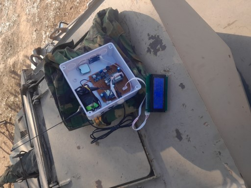
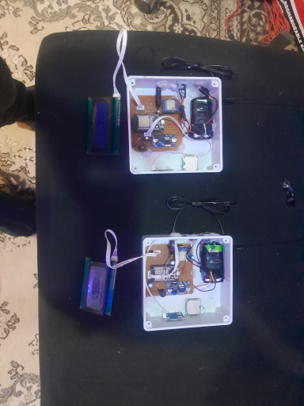
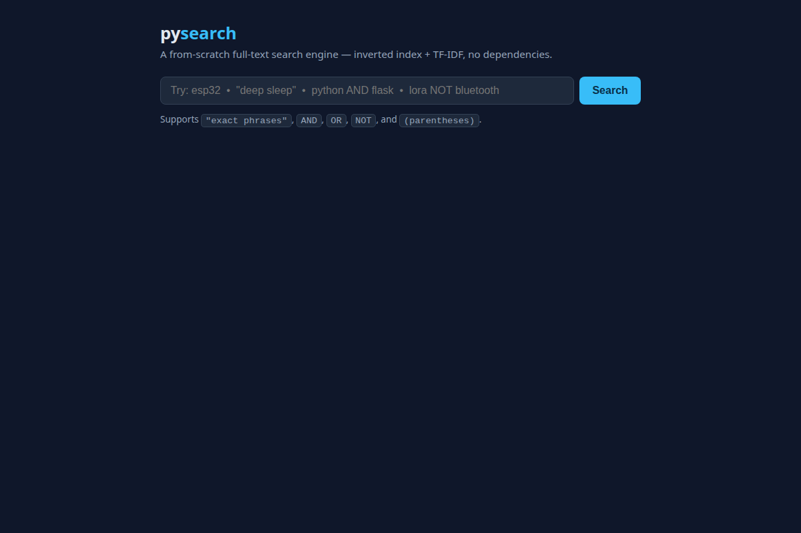
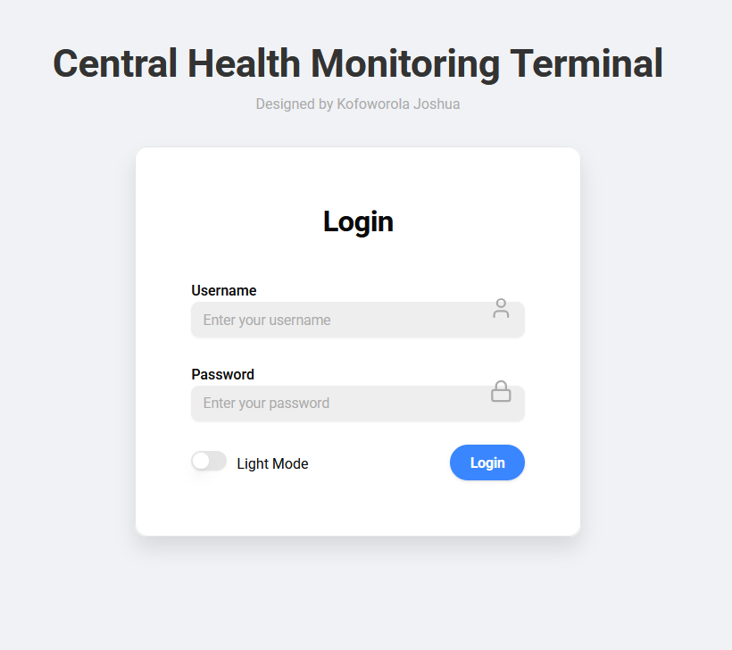
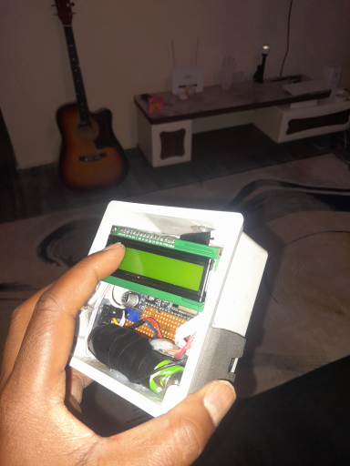
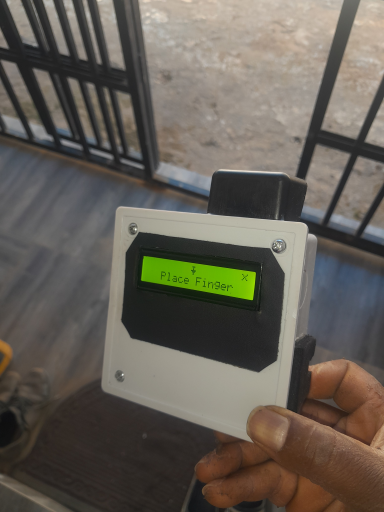
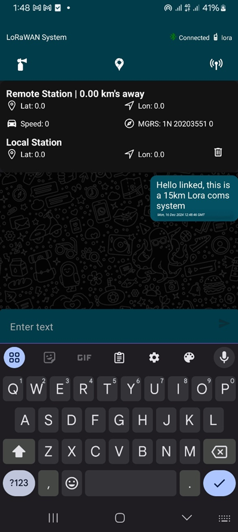
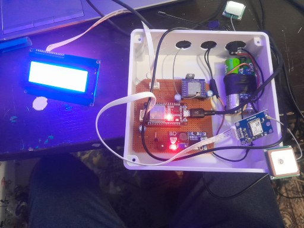

Projects
Each project below follows the same story: the challenge, what I built, and the result — with photos, architecture, and code.
Offline BLE + LoRa Chat App
The challenge
When cell networks and Wi-Fi are down — disasters, rural areas, dead zones — off-the-shelf messaging apps are useless. I wanted messaging that works with no infrastructure at all.
What I built
A chat system that routes messages over Bluetooth Low Energy for nearby devices and LoRa radio for long range, running on ESP32 hardware I assembled and programmed in C/C++.


The actual hardware and terminals from this build.
The result
Working off-grid messaging between devices with zero internet or cell service — the phone talks BLE to its ESP32, and ESP32s relay over LoRa.
pysearch
The challenge
Understand how real search engines work by building one with no search libraries — every component from first principles.
What I built
A complete full-text search engine in pure Python: a rule-based tokenizer with stemming, a positional inverted index, TF-IDF ranking with cosine similarity, and a query parser supporting phrase search and boolean operators (AND / OR / NOT, parentheses). Includes a Flask REST API, a web UI, and a 37-test pytest suite.

The result — measured
Benchmarked on the bundled 40-document demo corpus (1,668 words):
IoT Blood Sugar Monitor
The challenge
Glucose checks are normally manual, episodic, and easy to skip. I wanted readings captured by a device and visible in an app automatically.
What I built
A monitoring device around an ESP32 and a MAX30105 sensor — hardware I assembled myself — paired with a React Native app that receives readings over BLE and pushes them to Firebase for real-time viewing.



The app, the ESP32 hardware build, and the reference glucometer.
The result
An end-to-end pipeline from physical sensor to phone screen: readings flow sensor → ESP32 → app → cloud with no manual entry.
LoRaWAN Secure Communication System
The challenge
Long-range communication in places where conventional networks are unavailable or untrusted needs both reach and security.
What I built
A secure communication system on LoRaWAN, using its long-range, low-power links with encrypted payloads, built and tested on real radio hardware.


The LoRaWAN build and hardware setup.
The result
A working secure long-range link demonstrated on physical hardware — the project that led directly into the BLE + LoRa chat app above.
Skills — by role
Same engineer, two lenses. Each track points at the project that proves it.
For embedded / IoT roles
Firmware and hardware integration — proven by the LoRa chat system, the LoRaWAN build, and the ESP32 blood sugar monitor.
For software engineering roles
Algorithms, APIs, and full-stack development — proven by pysearch and the N.A.F maintenance platform.
Machine learning
Applied ML on real data — predictive maintenance at N.A.F and ranking in pysearch.
Experience
Software Engineer Extern — N.A.F
- Built a web-based aircraft maintenance and tracking system that improved operational accountability and maintenance efficiency.
- Developed machine-learning models (Random Forest) for predictive maintenance, flagging likely failures before they grounded aircraft.
- Worked with engineering teams to design workflows and ship system features.
Education
University of California, Davis
Berkeley City College
Contact
Looking for Summer 2027 internships and entry-level roles in embedded systems, IoT, and software engineering. Email is fastest.
Email: Kofoworolajoshua28@gmail.com
Phone: (510) 689-6569
Location: Oakland, CA — open to roles across the US, remote or on-site
Resume: Download PDF